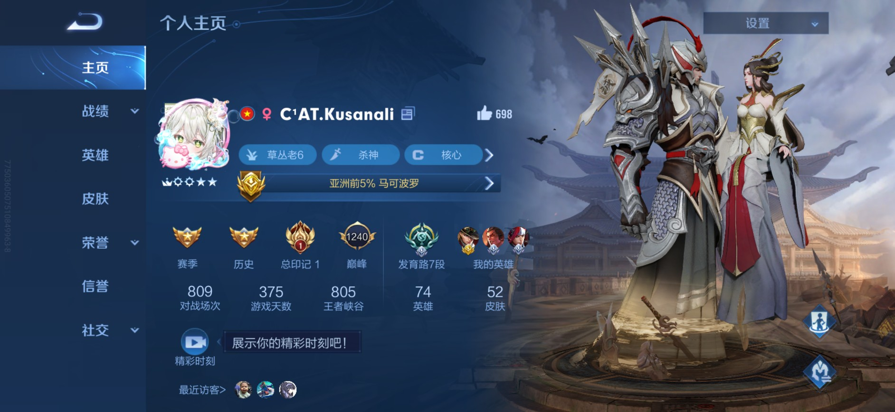

Dung's difficult journey to achieve rank Grandmaster in Honor Of Kings
Kusanali joined Honor of Kings last year, but due to his study plans and other commitments, he wasn't able to fully commit to ranked matches. Honor of Kings is the original version of Arena of Valor, a popular game in his country, so many of the heroes and skills are quite similar. However, the language barrier and unfamiliar hero stats present significant challenges. Unfortunately, Dung doesn't know Chinese, making it difficult for him to understand the effects of items and use them effectively in combat. Communication with allies is also a struggle, as most of them are Chinese speakers. Additionally, adapting to the hero stats took considerable time. Unlike Arena of Valor, which features more balanced stats and items, the developers of Honor of Kings have given marksmen heroes an average of only around 3000 HP at the start, making at least one defensive item essential for basic survival in combat. While defensive items in Honor of Kings do provide bonus attack power, their effects are not ideal for damage dealers. As a result, fighters and tanks are the current meta. Although he's skilled with marksmen in Arena of Valor, in Honor of Kings, he had to work extra hard to maintain vision, move, attack, and retreat because the support item branch lacks crowd control immunity.
The new ranked season coincided with his national defense training course, leaving him with little time to play. Besides aiming to reach the Grandmaster rank, he also worked hard to increase his Marco Polo points after losing his Top 5% World Title last month. His journey from Master IV to Master I was relatively smooth, but when it came to earning the final three stars to reach Grandmaster, he fell back to Master II. Chinese players are highly skilled, and he realized that he wasn’t yet good enough to compete with them. But he didn’t give up! Using his strongest hero, Marco Polo, he seized every opportunity to play and went straight from Master I with three stars to Grandmaster with four stars. He was thrilled with this achievement, and the following Monday, he was notified that he had regained his Top 5% World Marco Polo Title and now u can see that title in his Honor Of Kings account photo. Incredible!
After reaching Grandmaster, he decided to participate in the Peak Tournament — a special mode reserved for Grandmaster rank and above. This is an extremely challenging battlefield where most participants hold 1% Titles or even Top 100 World Titles. He only played seven matches in this mode and lost five. With these results, he recognized his limitations and accepted them, now feeling content with his current ranking.